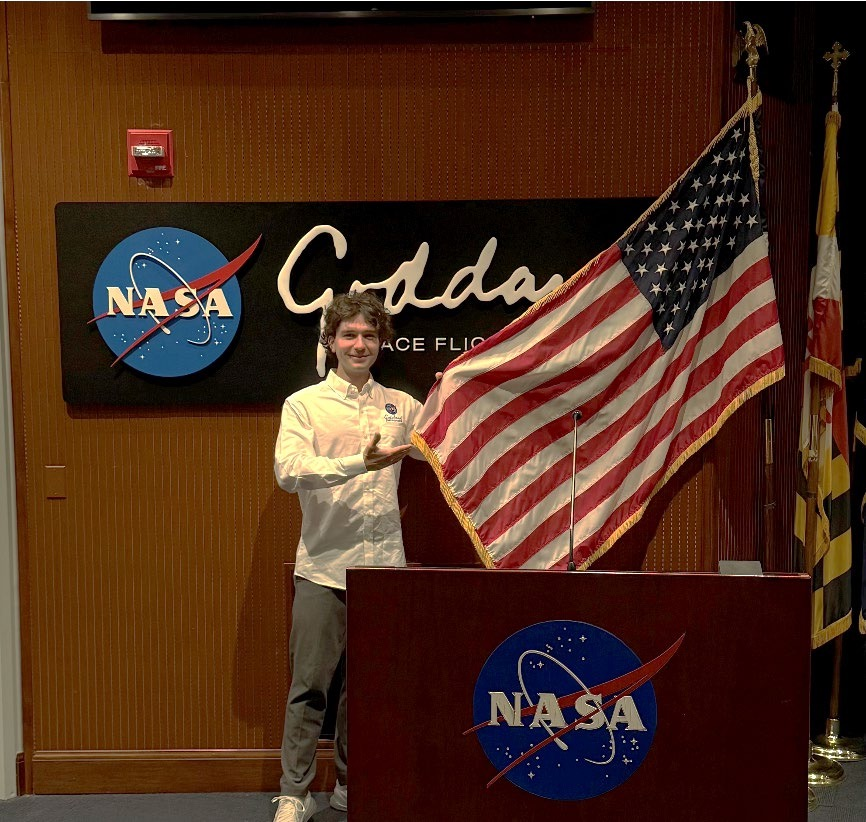

Jesús Navas
Guerrero
Soy ingeniero físico y aeroespacial, formado en la UPC y en Imperial College London.
He investigado en NASA Goddard y colaborado con Rolls-Royce durante mi máster. También soy cofundador de Attendi, una plataforma de alquiler y reservas.


Barcelona / Londres